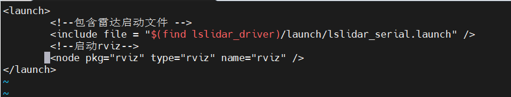
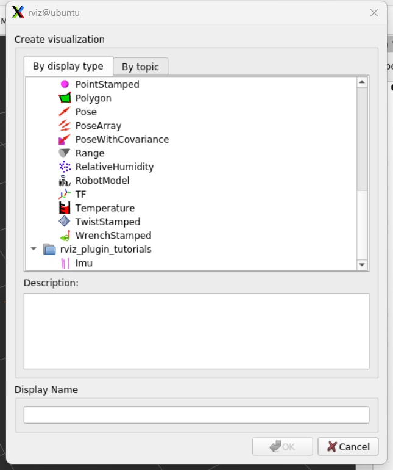
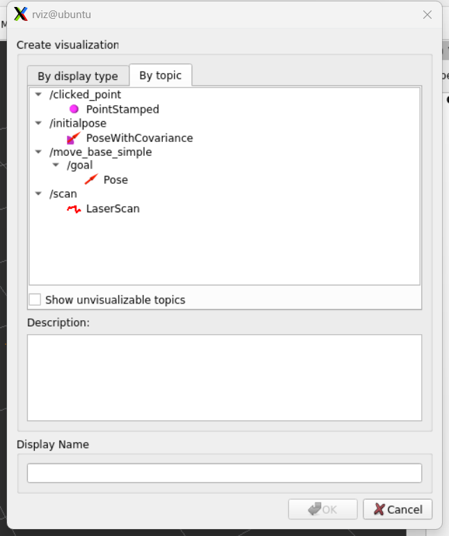

进行雷达建图的准备工作
地图的构建使用的是SLAM技术
目前有多种建图的方法：cartographer、gmapping... ...等，我下面采用的建图是gampping
- 首先要了解的是雷达建图中使用到的ROS系统所提供的通信方式是 “话题通信”：A发布一个话题C，B通过订阅该话题C知道A的情况，再采取对应行动
- 而Gmapping所订阅的话题是：
- 1.tf
- 2.scan
- 也就是说要想运行gmapping建图，就应该提供其所需要的话题：
- 1.你所设计的机器人各个部件之间的坐标变换（tf）
- 2.雷达的扫描数据（scan）
1. 新建功能包
在你雷达所在工作空间中的src目录新建功能包，例如：
{kind=link}
说明
- "catkin_ws"是我建的工作空间
- "lsx10"是雷达的官方功能包
- "start_car"是我给SLAM建图所建的功能包
1.1 如何创建自己的功能包
1.1.1 创建功能包指令及相关说明
指令格式:
说明
catkin_create_pkg创建功能包，其后必要的参数为：
1. 功能包名
2. 所需要的依赖
由于我们这里是测试SLAM建图功能，并没把雷达放到机器人上，也没有机器人实体，所以我们启动机器人的时候只是启动雷达的扫描功能
查看雷达官方的资料包可知
雷达扫描功能的launch文件在 ROS1-SDK->lsx10->lslidar_driver->launch 中
因此可知lslidar_driver是lsx10中的一个功能包，所以要启动雷达的扫描功能需要把lslidar_driver功能包包含到我们创建的功能包中，也就是为什么我在依赖里面最后加入了“lslidar_driver”
tip
launch 文件是 ROS（机器人操作系统） 中用于批量启动多个节点、设置节点参数、配置 ROS 系统环境的核心配置文件，后缀为 .launch，基于 XML 语法编写
说明
- roscpp：c++
- rospy：python
- std_msgs：消息的标准类型
- 一般我们创建功能包都默认添加这三个依赖，帮助我们编写执行文件（launch文件）
如果你已经做好了底盘，那么ros_arduino_python是底盘的功能包，这里也加进去，方便后续一起启动
1.1.2 创建launch文件夹
在创建好的功能包中创建launch文件夹
指令:
1.1.3 创建相关的launch文件
在launch文件夹中创建相关的launch文件
指令:
其中 start 是文件名，自定义即可
该启动文件具体内容参考以下内容:
{kind=link}
图中注释有误，代码可直接复制以下内容:
<!--
机器人启动文件:
1.启动底盘 （当前可选）
2.启动激光雷达
-->
<launch>
<!-- 如果你做好了底盘则添加底盘启动文件，如果没有就不添加，只添加雷达 -->
<include file = "$(find ros_arduino_python)/launch/arduino.launch" />
<!-- 添加雷达启动文件 -->
<include file = "$(find lslidar_driver)/launch/lslidar_serial.launch" />
</launch>
说明
<launch>和</launch>是launch文件固定的格式，即开头和结尾必须是这个<include file="$(find lslidar_driver)/launch/lslidar_serial.launch" />该句中find后面就是让ros系统在该功能包(lslidar_driver)去找所对应需要执行的文件(lslidar_serial.launch)
该步完成后你会在你创建的功能包的launch文件夹下看到你的这个strat.launch文件（假设你文件名和我一样）
1.1.4 测试
然后你可以测试一下这个文件（先单独测试雷达官方功能包的launch文件）
- cd (直接回到最开始的目录)
- roscore
- 新开终端，
cd (你所创建的工作空间名) - source ./devel/setup.bash (刷新环境变量)
- roslaunch (你所创建的功能包名) (你所创建的launch文件名)
正常情况下你会看到和运行雷达官方功能包的同样的输出，如果报错就把报错复制去搜或问AI，一般应该是语法（拼写、缩进）有问题
2. 使用优化
这个文件只是启动了雷达，但是具体的可视化需要打开rviz，就可以通过单独新开终端并输入“rviz”开启，该过程较为繁琐，因此可以在launch文件中添加该节点直接启动
2.1 修改launch文件
参考下图:

{kind=link}
即在添加雷达启动文件后添加启动rviz
<!--
机器人启动文件:
1.启动底盘 （当前可选）
2.启动激光雷达
-->
<launch>
<!-- 如果你做好了底盘则添加底盘启动文件，如果没有就不添加，只添加雷达 -->
<include file = "$(find ros_arduino_python)/launch/arduino.launch" />
<!-- 添加雷达启动文件 -->
<include file = "$(find lslidar_driver)/launch/lslidar_serial.launch" />
<!-- 启动rviz -->
<node pkg = "rviz" type = "rviz" name = "rviz" />
</launch>
关于node
- 在 ROS 1 的 launch 文件里，
<node>标签的核心格式是<node name="节点名" pkg="功能包名" type="可执行文件名" [可选参数] />。 - 以下三个参数是必填项:
- name ：是节点在 ROS 网络的唯一标识，会覆盖程序内的节点名
- pkg ：是节点所属的功能包
- type ：是功能包里要运行的可执行文件或脚本
- 常用可选参数有:
- output="screen"，能把节点打印信息输出到终端
- respawn="true" 让节点意外退出后自动重启
- required="true" 标记节点为必需，它退出则所有节点都终止
- ns="命名空间" 给节点划分命名空间避免冲突
- args 用来传递命令行参数
运行launch文件后会直接启动rviz，但是配置是默认配置，因为这里还只是测试，就不专门配一个配置，如果有需要可以自己配置一个，如下图:
{kind=link}
下面的launch文件也可以增加rviz节点，不再单独说明
3. 整合
3.1 创建启动+坐标变换（tf）文件
在launch文件夹下创建启动+坐标变换（tf）文件
输入
start_tf是我给这个launch文件设定的名字，自定义即可
内容参考下图:
{kind=link}
<!--
启动文件：
当不包含机器人模型时，需要发布静态坐标变换
-->
<launch>
<!-- 添加启动文件 -->
<include file="$(find start_car)/launch/start.launch" />
<!-- 添加静态坐标变换 -->
<node name = "lsn102basefootprint" pkg = "tf2_ros" type = "static_transform_publisher" args = "-0.05 0 0.15 0 0 0 /base_footprint /laser" />
<!-- 添加rviz -->
<node pkg = "rviz" name = "rviz" type = "rviz" />
</launch>
说明
- 开头和结尾不再赘述
- 第二行为包含我们刚才创建的雷达启动launch文件，这样我们启动坐标变换就可以顺便启动雷达
- 第三行为雷达和我们所设定的机器人基坐标系之间的tf变换：
node name=lslidartobasefootprint关键在于node name即“节点名称”（ros里面的各种任务都是靠各个节点的运行和各个节点之间的通信完成），节点名称自己定义；pkg是你这个节点所使用的功能包“tf2_ros”是ros内置的坐标转换功能包type是功能包所使用的类型“static_transform_publisher”即静态坐标发布，也就是说你所设定的机器人部件之间的坐标关系是静态的，不会改变args是该功能包执行所需要的参数
-0.05 0 0.15：雷达相对于底盘坐标系的xyz偏移（x = -0.05, y = 0, z = 0.15 单位：m）0 0 0：雷达相对于底盘坐标系的欧拉角偏移（roll = 0, pitch = 0, yaw = 0单位：弧度）/base_footprint:第一个坐标系（底盘的）/laser:第二个坐标系（雷达的）
3.2 测试
- 第一个终端输入
roscore - 开启第二个终端并输入
cd (你所创建的工作空间) - 再输入
source ./devel/setup.bash刷新环境变量 - 再输入
roslaunch (你所创建的功能包名) (你所创建的tf的launch文件) - 在开启的rviz中按照如下配置
主要添加：
1. TF
2. Laserscan
其中Fixed Frame需要设置为：base_footprint
{kind=link}
3.2.1 添加组件
rviz的左下会有一个 add按钮，点击添加组件
TF所在位置:

{kind=link}
scan是雷达发布的一个话题，因此需要从 By topic中添加
scan所在位置:
{kind=link}